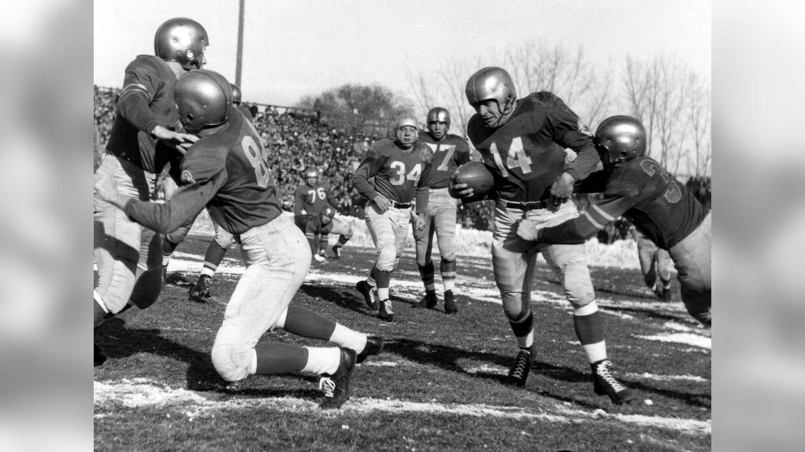
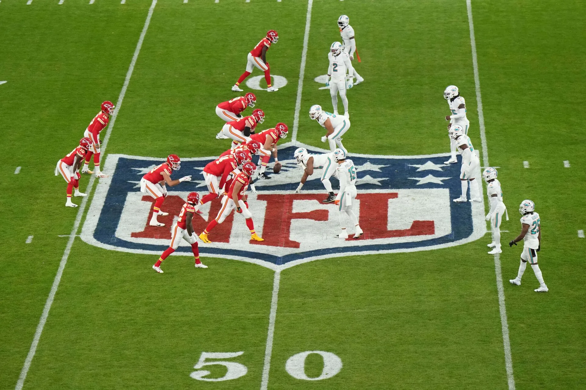

The best parts of a place rarely make it into a guidebook. We travel slowly through small towns, night markets, family kitchens and festival grounds to bring back the details that stay with you.
Culture is not a monument or a museum. It is the morning market, the language of a greeting, the recipe that has been adjusted by a hundred grandmothers. We document the living version — with permission, credit and fair pay for the people who share it.
Regional recipes, roadside stalls, family-run eateries and the stories behind the dishes. We eat where locals eat and we always ask before we photograph.
Seasonal fairs, temple processions, harvest nights and harvest songs. We map the calendar so you can arrive in time for the celebration, not after it.
From handloom weaving to pottery, blacksmithing and boat building. We visit the workshops, record the techniques and link you directly to the makers.


Our most requested routes, built around how a place actually moves — not just where its landmarks sit.
Start before sunrise in a covered market, learn what is in season, and eat breakfast standing up like everyone else does. Half a day, the most memorable half day.
Spend a few hours with a potter, weaver or boat builder. You will leave with something imperfect and a far better understanding of how things are made.
Arrive early, find the family-run seating, follow the drums, and stay past the fireworks. Includes etiquette notes so you are a welcome guest.
A relaxed local meetup where travellers and residents swap phrases and stories. No classroom pressure, no wrong answers.
No portraits of ceremonies or faces published without an explicit yes. If someone says no, that is the end of it.
We book guides, drivers, cooks and makers directly. No middlemen taking a cut from someone showing their own home.
Makers, guides and elders are named and credited, and paid a reuse fee wherever we publish their material.
Know a festival, a family kitchen or a craft worth travelling for? Send it to us. Every suggestion we publish is credited back to the person who shared it.